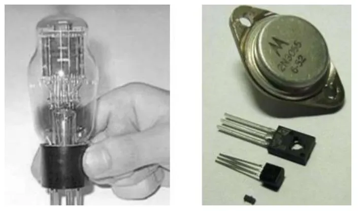
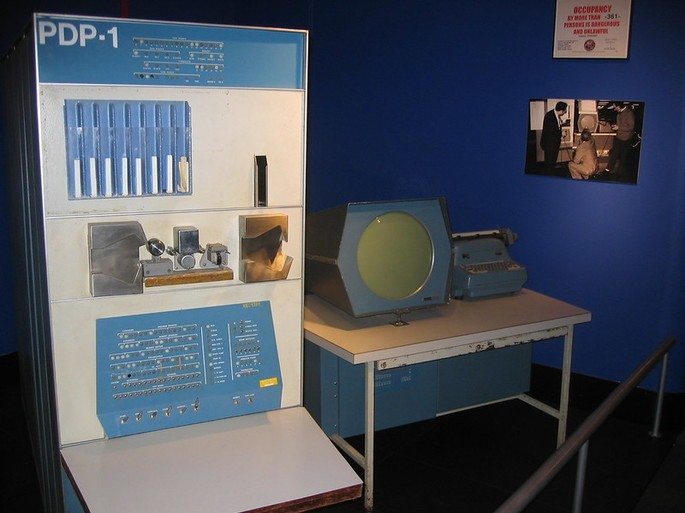

Transistor
° Segunda geração de computadores foi marcada pela substituição da válvula pelo transistor.
° Eles eram muito menores do que as válvulas e tinham outras vantagens:
° Não exigiam tempo de pré-aquecimento, consumiam menos energia, geravam menos calor e eram mais rápidos e confiáveis.
° No final da década de 50, foram incorporados aos computadores.

PDP-1
° Um exemplo de computador de segunda geração é o PDP-1.
° Um dispositivo desenvolvido em 1960 para a pesquisa científica.
° Onde o jogo de videogame da história foi jogado, o Spacewar!.